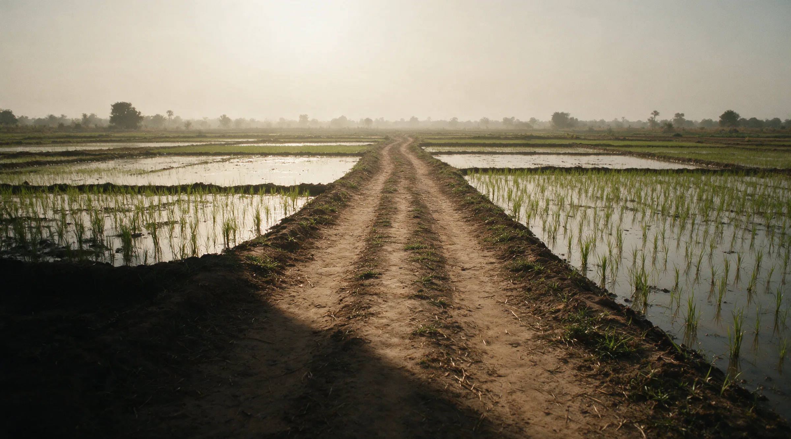
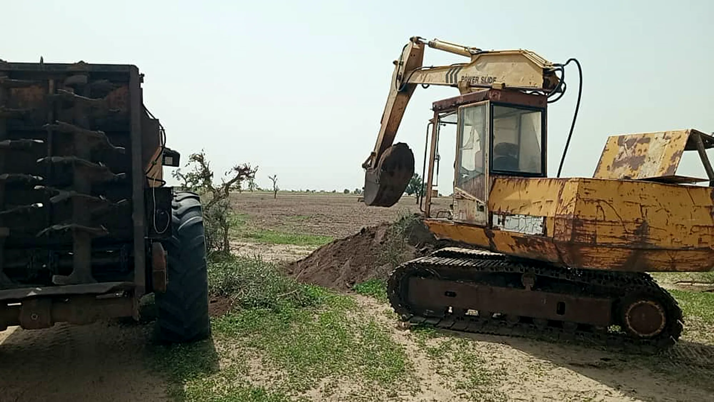
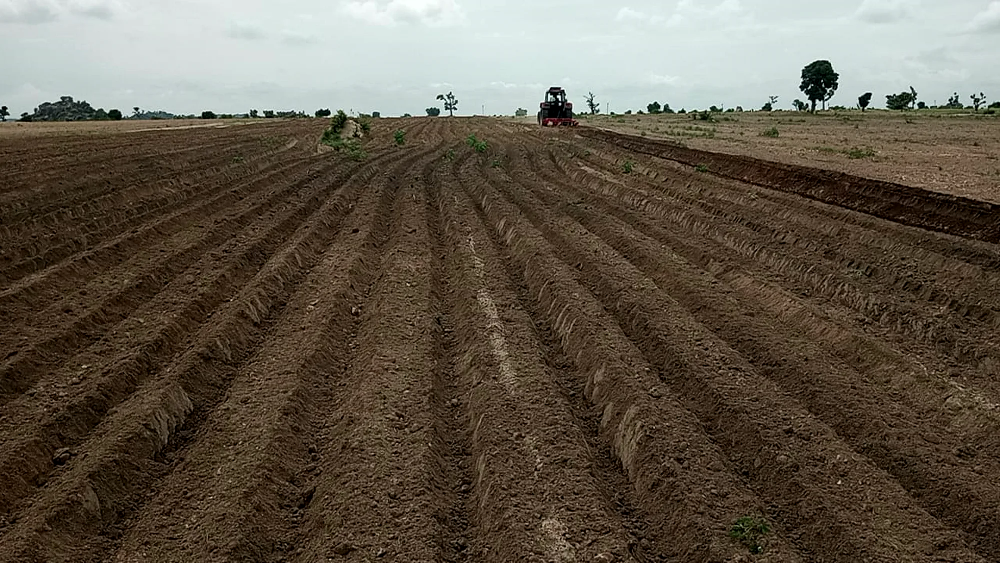
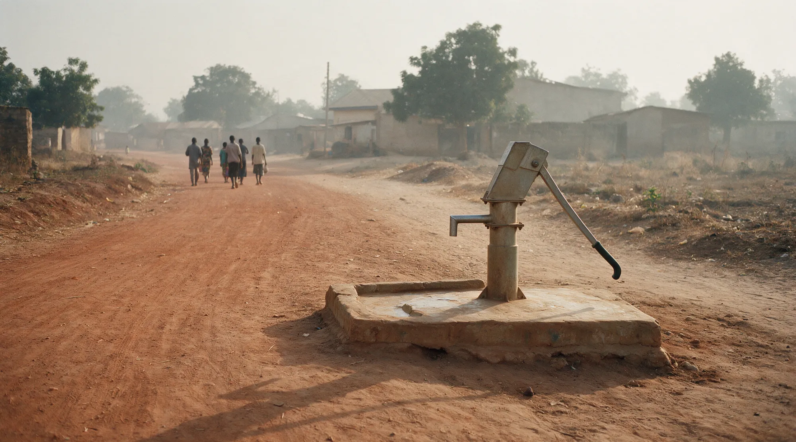

RecoveryGravity concentration
MercuryNone in the circuit
OriginLicensed block, documented
Grading reportPer lot, on request

Abuja, Nigeria · Dual-sector operations
Danbiba Farms & Mining Co. Ltd runs two operations on separate ground: licensed mineral blocks for gemstones, graphite and heavy mineral sands, and arable farmland at its own sites. Different places, different equipment, one compliance standard. This is how both are run, and what a buyer can verify.

Loading out. Excavator and haul truck on a working face. The mineral blocks are worked and rehabilitated on their own ground.
Each mineral block is held under an active exploration or mining licence, and community entry consent is recorded in writing before any work begins. The farmland is on separate sites and is run as its own division, with its own equipment and its own reporting.
Plate section
Four of the stones currently in production. The rest of the portfolio is listed on the minerals page.
The grading desk
Drag across a plate to inspect it. Anything you look at is written onto your parcel sheet, and the sheet travels with you to the desk.


This reflects current production. Further stones and industrial minerals are listed as new blocks come online.

Prepared ground. Ridged and ready for planting. The farm sites are separate from the mineral blocks.
Rice, maize, sorghum, millet, cowpea, soya, groundnut, cassava, broiler chickens and pond-raised catfish, grown on Danbiba farmland. The farm is its own operation on its own ground, worked by its own fleet.
Rotation runs legumes against grain to hold soil condition, and the soil is sampled each season. Separately, and on the mining side, worked-out blocks are backfilled and rehabilitated under their own conservation plan.

Access road and borehole. Built under a negotiated community development agreement.
The host community holds the land. The programme is built around that fact.
Parcel sizes, grading reports and export documentation are shared with verified buyers on request. Anything you inspected in the plate section has been written onto your parcel sheet.